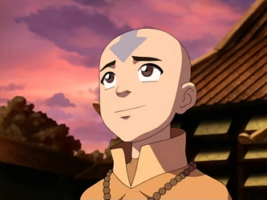

Szereplők
Elemek
Személyiségteszt
Quiz
Kérdőív
Milyen idomár lennél? - Derítsd ki könnyedén!
Melyik illik rád a legjobban?
1. tenyér
2. tenyér
3. tenyér
4. tenyér
Kire hasonlítasz személyiség terén leginkább?

Melyik évszakban érzed a legjobban magad?
Tél
Nyár
Ősz
Tavasz
Mi a kedvenc számod?
Mi a Harry Potter házad?
Melyik szín fejez ki a legjobban?
Piros
Kék
Zöld
Sárga
Kinek dolgozol nap, mint nap?
A világnak
Magamnak
Melyiket tartod a legfontosabbnak?
Szabadság
Erő
Alkalmazkodó képesség
Biztonság